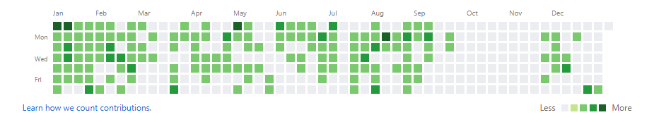

2020。新年快乐，生日快乐。
我觉得2020年是特别的一年。大概是因为感概时间过得太快吧，21世纪又跨过了十年。光阴似箭，日月如梭。第一批90后已经30岁了，而我也慢慢接受这个事实，准备好向三字头迈进。依稀记得小学时代，在作文中写到，20年后的自己，会是怎样的，我又已经成为自己当初想要成为的人了吗？
过去一年
回顾一下我的2019年。其实还是很有收获，并且很开心的。
首先来看下我去年写的2019年计划的完成情况吧。
- 坚持学习，写博客，每天更新Github。
- 阅读（包括非技术类书籍），然后尽快把之前买的书撸完。
- 学习Java（2019年公司项目需要）。
- 自觉、努力完成以上的事情，并且做得比去年更好。
第一点，我觉得还是做的不错的。2019年总共写了35篇博客，内容包括JavaSE的基础学习，SQL Server开发的总结，C#图解教程的总结，还有ASP.NET Core的学习等。虽说学习的内容还是比较基础，但也算是对整体知识体系的一个回顾和加强吧。坚持学习总体来说还是比较满意的，不过9月10月为了软考复习停了一段时间，后面考完又放松到现在(⊙ˍ⊙)，接下来要努力啊。
第二点。说真的2019年我还真的是没怎么好好看过书。前年买的书好像还一本都没有看完过=_=，包括《图解TCP/IP》、《刻意练习》。然而去年又增加了一本很厚砖头《C# 7.0核心技术指南》，好像很多书看着看着就放下不看了。对于看书这一点，我觉得真的要好好培养看书的习惯，心无旁骛，我一定可以。2020要好好加油了。
第三点。公司的Java项目在8月份的时候启动了。系统业务逻辑比较简单，使用的技术是SpringBoot和MyBatis，我主要是负责后台管理系统的几个模块的功能。上手Java之后，觉得Java的很多技术都挺先进的，Idea也并不比Visual Studio差。现在的开发也是越来越便捷啊，但是我们要做的还是一样，只有熟练掌握好开发技能，才能在实际的工作中游刃有余。
2019年非常开心的是，完成了两件重要的事情。第一是通过了软件设计师的考试。之前考了好几次都没有通过，这回我花了两个多月的时间准备，一鼓作气终于取得成功，原来只要付出是真的会有收获的。第二在这里我就不说了。还有2019年我喜欢上了足球。和朋友一起感受天河体育场的万人狂欢，独自享受休息日越秀山体育场舒服的夜晚。塔利斯卡的任意球绝杀，扎哈维的帽子戏法，还有第一次看CBA，留下了很多个热血沸腾的夜晚。2019年去过的地方不多，五一下川岛，福建之旅，国庆觅食路线，惠州温泉。此外，在家里玩Nintendo Switch肝MHXX也是肥宅的快乐选择。
新年计划
2020，我希望可以通过自己的努力，加快前进脚步！每个行业都有各自的辛酸，我觉得在IT行业的规则中，就是通过不断的学习探索和积累经验，不断扩大自己的知识领域，一步一个脚印，踏实前进。相信我在不久的将来，在技术和思想上能真正看到变化，成为一个优秀的开发者！
2020学习或工作目标：
- 坚持学习，至少写50篇博客。
- 至少读3本书，《图解TCP/IP》、《设计模式》、《世界简史》。
- 学习.NET Core。
- 学习一门前端框架，如VUE。
- 准备2021年的研究生考试。
另外，还希望：
- 多锻炼，保持健康身体。
- 重新拾回水晶球。
- 有时间多去花都。

2019年的github提交记录。

越秀山体育场。
最后，希望2020年家人朋友身体健康，每个人都可以过上自己想要生活*\(^o^)/*。